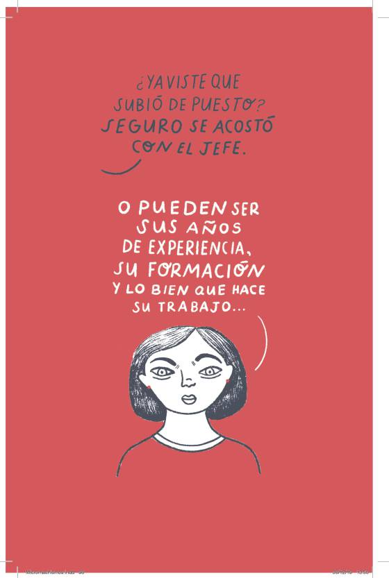

What is "Machismo?"

- Machismo is a strong or exaggerated sense of manliness; an assumptive attitude that virility, courage, strength, and entitlement to dominate are attributes or concomitants of masculinity (Dictionary.com).
- made up of certain behaviors, behaviors and beliefs that promote, reproduce and reinforce various forms of discrimination against women.
- built through the polarization of roles and stereotypes that define the male from the female.
- Many believe that this term was invented my Mexicans, however it is a term used in various parts of the world (Gob.mx).
Return to Selection